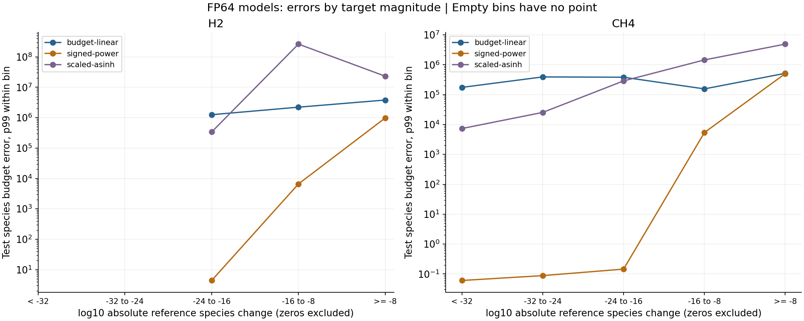
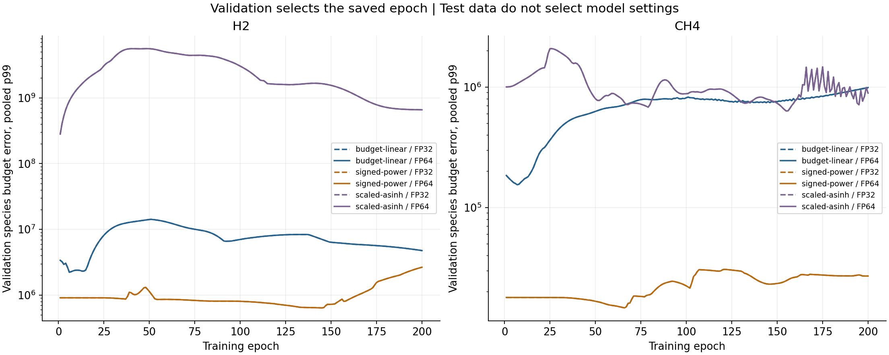

Can a different target representation make a small model more accurate?
This is our first chemistry learning test. All chemistry generation and model training ran on lh40902.
It is a small interpolation test, not a chemistry-solver replacement.
Main result: H2: signed-power has the lowest validation p99. Its test p99 is 7.4573e+05 budgets, a 15.54% reduction from predicting zero. CH4: signed-power has the lowest validation p99. Its test p99 is 83819 budgets, a 1.22% reduction from predicting zero. None of these models has test p99 within the physical budget.
The largest relative difference in paired FP32/FP64 test p99 is 6.29e-07.
At this short training budget, FP64 does not materially improve the physical errors. This does not prove that FP64 is never needed.
Step 1 — Make checked answers
What we did: run eight H2 and eight CH4 reaction trajectories. Cantera/CVODES produced the starting states.
One trajectory is a reaction history from one initial condition. An interval is a short integration from one selected state in that history.
From each selected state, SciPy Radau integrated the temperature and species changes directly. It started the change at zero;
it did not obtain the label by subtracting two nearly equal stored endpoints.
Why: the first pilot showed that endpoint subtraction can lose small changes. We compared the direct
answer with a second Radau setting and tight CVODES settings. Both methods still share Cantera FP64 reaction rates.
Agreement is evidence, not proof of exact answers.
We checked 384 intervals with nine solves per interval. Data generation took 645.4 seconds.
We excluded 18 whole intervals because a required solve failed or a temperature/species component did not meet
the 1%-of-budget reference check. Excluded cases remain in the raw records.
Mechanism
Checked intervals
Train accepted
Validation accepted
Test accepted
Excluded
H2
192
133
21
21
17
CH4
192
144
24
23
1
Implication: the model results below apply to the accepted subset. Exclusion can remove difficult cases;
it does not prove that the model will work on those cases.
Step 2 — Keep the test data separate
Training parents start at 900, 1000, 1100, 1250, 1400 and 1500 K. Validation starts at 1150 K.
Testing starts at 1300 K. Each uses 1 atm and equivalence ratio 1. All intervals from one parent stay in one split.
Training data fit the model and normalization scales. Validation data select the saved epoch.
Test data measure the final result. No test score chooses an epoch or a transformation parameter.
There is only one validation and one test parent per mechanism. We cannot yet claim broad generalization.
Step 3 — Change only the target coordinate
Budget-linear divides the physical change by its error budget. Signed-power compresses the magnitude range.
Scaled asinh is nearly linear near zero and compresses larger values. We convert all predictions back to physical changes before scoring.
All variants use two 64-unit tanh layers, Adam at 0.001, seed 20261008 and 200 epochs. Each sees identical batches
and starts from identical numerical weights. Output channels that are always exactly zero in training are fixed to zero for all variants.
Each coordinate gets one FP32 and one FP64 model per mechanism: 12 fits, with no hyperparameter search.
FP32 here applies after FP64 input normalization. It is not the earlier test that rounded raw physical starting states.
Target normalization and final reconstruction use FP64. Timing includes validation; inference timing uses repeated batches and includes decoding.
Step 4 — Compare physical errors
The species budget is 1e-12 + 1e-6 * abs(Y_initial). Divide the prediction error by this budget.
A value below 1 is within budget. The reported p99 is the 99th percentile across accepted test species components;
99% of those component errors are at or below this value.
it is not a guarantee on every sample and is not the interval-maximum statistic from checkpoint 02.
Mechanism
Target
Precision
Saved epoch
Test budget p99
Above budget
Train seconds
H2
budget-linear
float32
6
2.6085e+06
80.0%
0.97
H2
budget-linear
float64
6
2.6085e+06
80.0%
0.32
H2
signed-power
float32
145
7.4573e+05
62.4%
0.37
H2
signed-power
float64
145
7.4573e+05
62.4%
0.37
H2
scaled-asinh
float32
1
1.9778e+08
80.0%
0.33
H2
scaled-asinh
float64
1
1.9778e+08
80.0%
0.33
CH4
budget-linear
float32
7
3.777e+05
91.5%
0.37
CH4
budget-linear
float64
7
3.777e+05
91.5%
0.39
CH4
signed-power
float32
66
83819
26.0%
0.39
CH4
signed-power
float64
66
83819
26.0%
0.41
CH4
scaled-asinh
float32
155
5.8564e+05
54.3%
0.41
CH4
scaled-asinh
float64
155
5.8564e+05
54.3%
0.44
H2: validation selected signed-power, float64.
Its test p99 is 7.4573e+05 budgets. Predicting zero gives 8.8295e+05 budgets.
Selection used validation data, not this test comparison.
CH4: validation selected signed-power, float32.
Its test p99 is 83819 budgets. Predicting zero gives 84853 budgets.
Selection used validation data, not this test comparison.
The zero baseline always predicts no chemical change. It is a useful check because many intervals have very small changes.
A model must improve on this baseline before we call it useful.
Mechanism
Zero baseline above budget
Selected model above budget
Relative error p99
Relative-mask components / all
Predicted negative Y
Max abs(sum delta-Y)
H2
58.57%
62.38%
1617.2
144 / 210
1.43%
0.068428
CH4
24.61%
26.00%
6.3562e+21
995 / 1219
1.39%
7.2101e-05
The selected models have a slightly better p99 than zero, but more components exceed the budget.
Their relative-error tails and conservation errors remain large. A smaller value in one metric is not an overall accuracy improvement.
The zero baseline has relative error 1 (100%) on every nonzero reference. Negative predicted mass fractions are not clipped.

Magnitude bins exclude exact zero estimates. Counts and separately masked relative errors are in the downloadable metrics.
Relative errors use only components that passed the stricter reference-relative mask.
Mechanism
Species (validation-selected model)
Test budget p99
H2
H2O
1.0369e+06
H2
O2
8.2689e+05
H2
H
6.518e+05
H2
H2O2
6.3817e+05
H2
O
6.2955e+05
CH4
HO2
5.2092e+05
CH4
CH3
3.551e+05
CH4
CO
1.2603e+05
CH4
H2O
1.2463e+05
CH4
C2H6
1.1746e+05
Step 5 — Check what the training curves support

FP32 and FP64 curves nearly overlap. Each panel has its own vertical range.
Training-coordinate loss fell, but physical validation error often rose. Some best epochs were near the start.
Thus, minimizing the current normalized loss did not reliably minimize the physical error we care about.
A lower error in one run does not establish a universal winner. One seed cannot measure training variability.
Different target coordinates and output scales also change the physical weighting of the training loss;
this is a comparison of complete target pipelines, not an isolated proof about numerical storage.
Do not infer an approximation ceiling from this single short training run. Before adding residual stages,
check whether the baseline fits training data, whether validation still improves, and whether the result repeats across parents and seeds.
No residual model or full-trajectory rollout has run in this checkpoint.
Reproduction
Raw states, labels, exclusion lists, saved weights, scales and test predictions remain in
runs/representation/checkpoint03-20261008 under the server project. Runs use one CPU and no GPU.